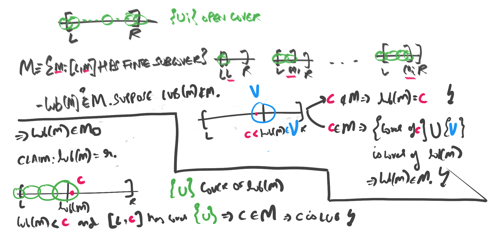
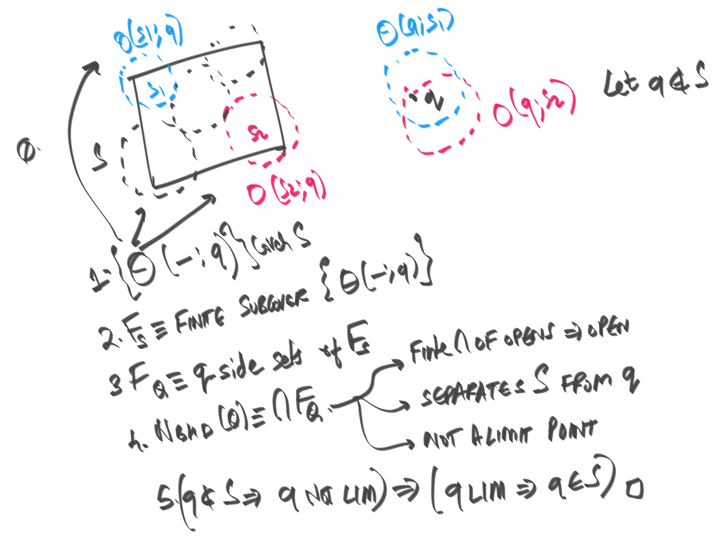

§ Proof of Heine Borel from Munkres (compact iff closed, bounded)
We wish to show that compact iff closed and bounded in R.
- Let S be closed and bounded. We wish to show that S is compact. Since S is bounded, S is contained in some large closed interval I. (1) Closed intervals are compact in the order topology of a complete total order, and thus I is compact ( R is a complete total order). Then (2) S is a closed subset of a compact set I, and is thus compact. Hence closed and bounded implies compact.
- Let S be compact. We wish to show that S is closed and bounded. Cover S with open balls of increasing radii. This is an open cover; Extract a finite subcover. From the finite subcover, pick the largest open ball I. S is entirely contained in I, and is thus bounded. (3) S is closed, as it is a compact subset of a Haussdorff space. Hence, we are done.
§ (1) Closed intervals are compact in the topology of a complete total order.
Let us work with a complete total order T (in our case T=R). We equip T
with the order topology (which matches the usual topology on R).
Let [l,r] be a closed interval. Let {Ui} be an open cover of [l,r].
Let M (for middle) be the set of points m such that [l,m] has a finite cover using {Ui}
That is,
M≡{m∈[l,r]:[l,m] has finite cover}
- CLAIM 1: lub(M)∈M.
- Pick an open lub(M)∈V∈{Ui}.
- As V is open, there is some (c∈V)<(lub(M)∈V).
- if c∈M: the finite cover of [l,c] along with V give a finite cover for lub(M). Thus lub(M)∈M.
- if c∈M, then c<lub(M) and c is an upper bound for M, which is absurd.
- Thus, lub(M)∈M.
- CLAIM 2: lub(M)=r. This implies that r∈M, and [l,r] has a finite subcover using Ui.
- For contradiction of Claim 2, assume that lub(M)=r.
- Pick some open set O in the cover that contains lub(M): lub(M)∈O∈{Ui}i.
- As O is open, O contains some point c (for contradiction) that is after lub(M): lub(M)<c.
- Rewriting: c∈O∧c>lub(M). So, the interval [l,c] has the same cover as [l,lub(M)].
- Hence, [l,c] has a finite cover, thus c∈M.
- CONTRADICTION: c∈M∧c>lub(M), which is absurd. We would have c=lub(M).
- Thus, this means that lub(M)=r, and thus the entire interval [l,r] has finite subcover.

§ (2) Closed subset of a compact set is compact
Let B be a closed subset of a compact space K. Take an open cover {Ui} of B.
See that {Bc,Ui} is a cover of the full space K, and hence has a finite subcover.
This subcover will be of the form {Bc,Uj}. The {Uj} are a finite subcover of B.
Thus, B is compact as we have extracted a finite subcover of an open cover.
§ (3) Compact subset of Haussdorf space is closed
Morally, this is true because in a Haussdorff space, single point subsets are closed.
Compactness pushes this local property to a global property --- The entire compact set
itself becomes closed.
- Let S be a compact subset of a haussdorf space X.
- For any point q∈S, we need to show the existence of an open set q∈Q such that S∩Q=∅.
- For each point s∈S, use Haussdorf to find separating sets s∈O(s;q), q∈O(q;s) such that O(s;q)∩Q(q;s)=∅.
- See that the sets {O(s;q):s∈S} are a cover of S.
- Extract a finite subcover of this, say {O(si;q):s∈S}.
- Use this finite subcover to separate q from S.
- Now, pick the open set Q≡∩{O(q;si)}, which is open since it's a finite intersection.
- See that this Q separates q from S.
- We have that Q∩O(si,q)=∅ for each O(si,q).
- Thus, Q∩(∪O(si;q))=∅, and thus Q∩S=∅ as S⊆∪O(si;q).
- if q∈S, we have an open Q that separates q from S, thus q is NOT A LIMIT --- not every open nbhd of Q has non-empty intersection with S.
- Contrapositive: All limit points of S are in S. Thus, S is closed. (4)

§ (4) A set with all limit points is closed (complement of open)
Let S be a set that has all its limit points. Consider the complement set T. We will
show that T is open.
- all points in T: have open that separates them from S. Union of all of these opens is T. T open: infinite union of opens. S: the complement of an open set, closed.
More elaborately:
- for all all t∈T, tinS (by defn).
- t is not a limit point of S ( S has all limit points).
- Thus, there is an open Ut such that t∈Ut and Ut∩S=∅.
- Define: T′≡∪t∈TUt. Claim: T′=T.
- As Ut contains no elements of S, T′ contains no element of S.
- As Ut contains t, T′ contains all t.
- Thus T′ contains all t∈T, and no element of S. So T′ is a complement of S. T′=T.
- T is a infinite union of opens. Thus T is open.
- S is complement of open set T. S is closed.